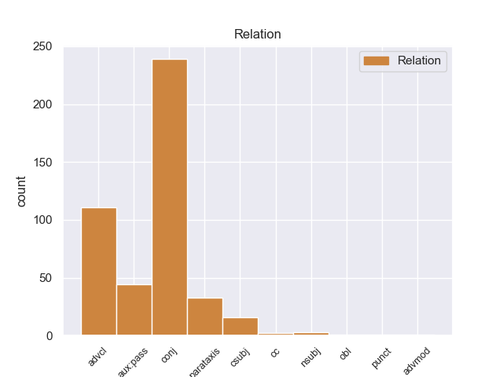
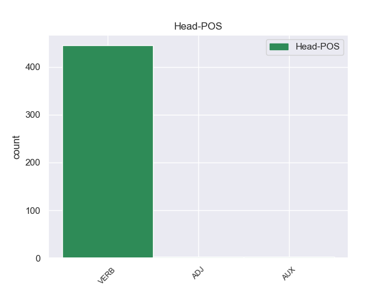
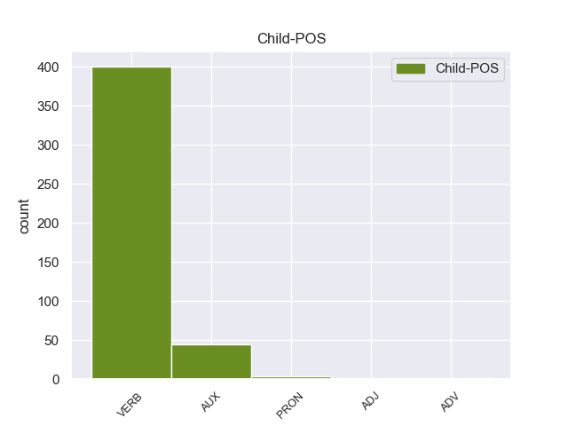

Distribution of features within this leaf



Agreement Rules sorted by frequency.
- When the dependent token is the conjunct(conj) of the head token,
1 Ο _ _ _ _ 0 _ _ _
2 Εισαγγελέας _ _ _ _ 0 _ _ _
3 σ _ _ _ _ 0 _ _ _
4 τη _ _ _ _ 0 _ _ _
5 Γαλλία _ _ _ _ 0 _ _ _
6 έχει tειr VERB _ Mood=Ind|Number=Sing|Person=3|Tense=Pres|VerbForm=Fin 0 _ _ _
7 το _ _ _ _ 0 _ _ _
8 δικαίωμα _ _ _ _ 0 _ _ _
9 να _ _ _ _ 0 _ _ _
10 εκπληρώνει _ _ _ _ 0 _ _ _
11 τα _ _ _ _ 0 _ _ _
12 καθήκοντά _ _ _ _ 0 _ _ _
13 του _ _ _ _ 0 _ _ _
14 βάσει _ _ _ _ 0 _ _ _
15 του _ _ _ _ 0 _ _ _
16 νόμου _ _ _ _ 0 _ _ _
17 και _ _ _ _ 0 _ _ _
18 το _ _ _ _ 0 _ _ _
19 Σώμα _ _ _ _ 0 _ _ _
20 δεν _ _ _ _ 0 _ _ _
21 λαμβάνει λαμβάνειr VERB _ Mood=Ind|Number=Sing|Person=3|Tense=Pres|VerbForm=Fin 6 conj _ _
22 θέση _ _ _ _ 0 _ _ _
23 σχετικά _ _ _ _ 0 _ _ _
24 με _ _ _ _ 0 _ _ _
25 αυτό _ _ _ _ 0 _ _ _
26 . _ _ _ _ 0 _ _ _
1 Ο _ _ _ _ 0 _ _ _
2 Μπαράκ _ _ _ _ 0 _ _ _
3 Ομπάμα _ _ _ _ 0 _ _ _
4 ανέφερε _ _ _ _ 0 _ _ _
5 ότι _ _ _ _ 0 _ _ _
6 « _ _ _ _ 0 _ _ _
7 ήδη _ _ _ _ 0 _ _ _
8 υπάρχουν _ _ _ _ 0 _ _ _
9 πολλές _ _ _ _ 0 _ _ _
10 αναφορές _ _ _ _ 0 _ _ _
11 για _ _ _ _ 0 _ _ _
12 πόλεμο _ _ _ _ 0 _ _ _
13 με _ _ _ _ 0 _ _ _
14 το _ _ _ _ 0 _ _ _
15 Ιράν _ _ _ _ 0 _ _ _
16 » _ _ _ _ 0 _ _ _
17 και _ _ _ _ 0 _ _ _
18 επεσήμανε _ _ _ _ 0 _ _ _
19 τέτοιες _ _ _ _ 0 _ _ _
20 συζητήσεις _ _ _ _ 0 _ _ _
21 « _ _ _ _ 0 _ _ _
22 είναι είνar VERB _ Mood=Ind|Number=Plur|Person=3|Tense=Pres|VerbForm=Fin 0 _ _ _
23 προς _ _ _ _ 0 _ _ _
24 όφελος _ _ _ _ 0 _ _ _
25 της _ _ _ _ 0 _ _ _
26 Τεχεράνης _ _ _ _ 0 _ _ _
27 γιατί _ _ _ _ 0 _ _ _
28 αυξάνουν αυξάνου VERB _ Mood=Ind|Number=Plur|Person=3|Tense=Pres|VerbForm=Fin 22 advcl _ _
29 τις _ _ _ _ 0 _ _ _
30 τιμές _ _ _ _ 0 _ _ _
31 του _ _ _ _ 0 _ _ _
32 πετρελαίου _ _ _ _ 0 _ _ _
33 , _ _ _ _ 0 _ _ _
34 σ _ _ _ _ 0 _ _ _
35 το _ _ _ _ 0 _ _ _
36 οποίο _ _ _ _ 0 _ _ _
37 βασίζεται _ _ _ _ 0 _ _ _
38 η _ _ _ _ 0 _ _ _
39 Ιρανική _ _ _ _ 0 _ _ _
40 Κυβέρνηση _ _ _ _ 0 _ _ _
41 για _ _ _ _ 0 _ _ _
42 την _ _ _ _ 0 _ _ _
43 χρηματοδότηση _ _ _ _ 0 _ _ _
44 του _ _ _ _ 0 _ _ _
45 πυρηνικού _ _ _ _ 0 _ _ _
46 της _ _ _ _ 0 _ _ _
47 προγράμματος _ _ _ _ 0 _ _ _
48 » _ _ _ _ 0 _ _ _
49 . _ _ _ _ 0 _ _ _
1 Este _ _ _ _ 0 _ _ _
2 combustible _ _ _ _ 0 _ _ _
3 fue ser AUX _ Mood=Ind|Number=Sing|Person=3|Tense=Past|VerbForm=Fin 4 aux:pass _ _
4 desarrollado desarrollar VERB _ Gender=Masc|Number=Sing|Tense=Past|VerbForm=Part 0 _ _ _
5 en _ _ _ _ 0 _ _ _
6 Suecia _ _ _ _ 0 _ _ _
7 por _ _ _ _ 0 _ _ _
8 la _ _ _ _ 0 _ _ _
9 firma _ _ _ _ 0 _ _ _
10 productora _ _ _ _ 0 _ _ _
11 de _ _ _ _ 0 _ _ _
12 etanol _ _ _ _ 0 _ _ _
13 SEKAB _ _ _ _ 0 _ _ _
14 . _ _ _ _ 0 _ _ _
1 Η _ _ _ _ 0 _ _ _
2 Αστυνομία _ _ _ _ 0 _ _ _
3 απέκλεισε απέκλεισar VERB _ Mood=Ind|Number=Sing|Person=3|Tense=Past|VerbForm=Fin 0 _ _ _
4 την _ _ _ _ 0 _ _ _
5 πόλη _ _ _ _ 0 _ _ _
6 με _ _ _ _ 0 _ _ _
7 σκοπό _ _ _ _ 0 _ _ _
8 να _ _ _ _ 0 _ _ _
9 βρεί _ _ _ _ 0 _ _ _
10 τους _ _ _ _ 0 _ _ _
11 κρατούμενους _ _ _ _ 0 _ _ _
12 και _ _ _ _ 0 _ _ _
13 να _ _ _ _ 0 _ _ _
14 τους _ _ _ _ 0 _ _ _
15 ξαναβάλει _ _ _ _ 0 _ _ _
16 σ _ _ _ _ 0 _ _ _
17 τη _ _ _ _ 0 _ _ _
18 φυλακή _ _ _ _ 0 _ _ _
19 » _ _ _ _ 0 _ _ _
20 , _ _ _ _ 0 _ _ _
21 δήλωσε δήλωσar VERB _ Mood=Ind|Number=Sing|Person=3|Tense=Past|VerbForm=Fin 3 parataxis _ _
22 εκπρόσωπος _ _ _ _ 0 _ _ _
23 των _ _ _ _ 0 _ _ _
24 τοπικών _ _ _ _ 0 _ _ _
25 αρχών _ _ _ _ 0 _ _ _
26 . _ _ _ _ 0 _ _ _
1 Δεν _ _ _ _ 0 _ _ _
2 πιστεύω πιστεύωr VERB _ Mood=Ind|Number=Sing|Person=3|Tense=Pres|VerbForm=Fin 0 _ _ _
3 να _ _ _ _ 0 _ _ _
4 υπάρχουν υπάρχοar VERB _ Mood=Ind|Number=Plur|Person=3|Tense=Pres|VerbForm=Fin 2 csubj _ _
5 πολλοί _ _ _ _ 0 _ _ _
6 άλλοι _ _ _ _ 0 _ _ _
7 συνομιλητές _ _ _ _ 0 _ _ _
8 από _ _ _ _ 0 _ _ _
9 την _ _ _ _ 0 _ _ _
10 πλευρά _ _ _ _ 0 _ _ _
11 των _ _ _ _ 0 _ _ _
12 Παλαιστινίων _ _ _ _ 0 _ _ _
13 . _ _ _ _ 0 _ _ _
1 Επιτρέψτε _ _ _ _ 0 _ _ _
2 μου _ _ _ _ 0 _ _ _
3 , _ _ _ _ 0 _ _ _
4 κύριε _ _ _ _ 0 _ _ _
5 Πρόεδρε _ _ _ _ 0 _ _ _
6 , _ _ _ _ 0 _ _ _
7 να _ _ _ _ 0 _ _ _
8 αναλύσω _ _ _ _ 0 _ _ _
9 τους _ _ _ _ 0 _ _ _
10 έξι _ _ _ _ 0 _ _ _
11 στόχους _ _ _ _ 0 _ _ _
12 της _ _ _ _ 0 _ _ _
13 ισπανικής _ _ _ _ 0 _ _ _
14 Προεδρίας _ _ _ _ 0 _ _ _
15 που _ _ _ _ 0 _ _ _
16 εσείς εσείς PRON _ Mood=Sub|Number=Sing|Person=3|Tense=Imp|VerbForm=Fin 17 nsubj _ _
17 συνοψίσατε συνοψίσατ VERB _ Mood=Sub|Number=Sing|Person=3|Tense=Imp|VerbForm=Fin 0 _ _ _
18 σε _ _ _ _ 0 _ _ _
19 τρεις _ _ _ _ 0 _ _ _
20 κατευθύνσεις _ _ _ _ 0 _ _ _
21 , _ _ _ _ 0 _ _ _
22 υπό _ _ _ _ 0 _ _ _
23 το _ _ _ _ 0 _ _ _
24 πρίσμα _ _ _ _ 0 _ _ _
25 αυτής _ _ _ _ 0 _ _ _
26 της _ _ _ _ 0 _ _ _
27 προσέγγισης _ _ _ _ 0 _ _ _
28 . _ _ _ _ 0 _ _ _
1 Para _ _ _ _ 0 _ _ _
2 aplicaciones _ _ _ _ 0 _ _ _
3 Xvnc _ _ _ _ 0 _ _ _
4 es _ _ _ _ 0 _ _ _
5 un _ _ _ _ 0 _ _ _
6 X _ _ _ _ 0 _ _ _
7 " _ _ _ _ 0 _ _ _
8 servidor _ _ _ _ 0 _ _ _
9 " _ _ _ _ 0 _ _ _
10 ( _ _ _ _ 0 _ _ _
11 es ser VERB _ Mood=Ind|Number=Sing|Person=3|Tense=Pres|VerbForm=Fin 14 cc _ _
12 decir _ _ _ _ 0 _ _ _
13 , _ _ _ _ 0 _ _ _
14 muestra mostrar VERB _ Mood=Ind|Number=Sing|Person=3|Tense=Pres|VerbForm=Fin 0 _ _ _
15 ventanas _ _ _ _ 0 _ _ _
16 de _ _ _ _ 0 _ _ _
17 el _ _ _ _ 0 _ _ _
18 cliente _ _ _ _ 0 _ _ _
19 ) _ _ _ _ 0 _ _ _
20 , _ _ _ _ 0 _ _ _
21 y _ _ _ _ 0 _ _ _
22 para _ _ _ _ 0 _ _ _
23 los _ _ _ _ 0 _ _ _
24 usuarios _ _ _ _ 0 _ _ _
25 remotos _ _ _ _ 0 _ _ _
26 de _ _ _ _ 0 _ _ _
27 VNC _ _ _ _ 0 _ _ _
28 es _ _ _ _ 0 _ _ _
29 un _ _ _ _ 0 _ _ _
30 servidor _ _ _ _ 0 _ _ _
31 VNC _ _ _ _ 0 _ _ _
32 . _ _ _ _ 0 _ _ _
1 Εδώ _ _ _ _ 0 _ _ _
2 οφείλω _ _ _ _ 0 _ _ _
3 να _ _ _ _ 0 _ _ _
4 εξηγήσω _ _ _ _ 0 _ _ _
5 , _ _ _ _ 0 _ _ _
6 εξ _ _ _ _ 0 _ _ _
7 ονόματος _ _ _ _ 0 _ _ _
8 της _ _ _ _ 0 _ _ _
9 Επιτροπής _ _ _ _ 0 _ _ _
10 , _ _ _ _ 0 _ _ _
11 ότι _ _ _ _ 0 _ _ _
12 από _ _ _ _ 0 _ _ _
13 τη _ _ _ _ 0 _ _ _
14 δική _ _ _ _ 0 _ _ _
15 μας _ _ _ _ 0 _ _ _
16 πλευρά _ _ _ _ 0 _ _ _
17 δεν _ _ _ _ 0 _ _ _
18 μπορούμε _ _ _ _ 0 _ _ _
19 να _ _ _ _ 0 _ _ _
20 ορίσουμε _ _ _ _ 0 _ _ _
21 πότε _ _ _ _ 0 _ _ _
22 θα _ _ _ _ 0 _ _ _
23 γίνει _ _ _ _ 0 _ _ _
24 η _ _ _ _ 0 _ _ _
25 θετική _ _ _ _ 0 _ _ _
26 δήλωση _ _ _ _ 0 _ _ _
27 αξιοπιστίας _ _ _ _ 0 _ _ _
28 και _ _ _ _ 0 _ _ _
29 για _ _ _ _ 0 _ _ _
30 την _ _ _ _ 0 _ _ _
31 ταμειακή _ _ _ _ 0 _ _ _
32 διαχείριση _ _ _ _ 0 _ _ _
33 , _ _ _ _ 0 _ _ _
34 διότι _ _ _ _ 0 _ _ _
35 η _ _ _ _ 0 _ _ _
36 απόφαση _ _ _ _ 0 _ _ _
37 αυτή _ _ _ _ 0 _ _ _
38 είναι _ _ _ _ 0 _ _ _
39 υπόθεση _ _ _ _ 0 _ _ _
40 του _ _ _ _ 0 _ _ _
41 Ελεγκτικού _ _ _ _ 0 _ _ _
42 Συνεδρίου _ _ _ _ 0 _ _ _
43 , _ _ _ _ 0 _ _ _
44 το _ _ _ _ 0 _ _ _
45 οποίο _ _ _ _ 0 _ _ _
46 από _ _ _ _ 0 _ _ _
47 την _ _ _ _ 0 _ _ _
48 πλευρά _ _ _ _ 0 _ _ _
49 του _ _ _ _ 0 _ _ _
50 δεν _ _ _ _ 0 _ _ _
51 έχει _ _ _ _ 0 _ _ _
52 θέσει _ _ _ _ 0 _ _ _
53 κάποιο _ _ _ _ 0 _ _ _
54 σημείο _ _ _ _ 0 _ _ _
55 αναφοράς _ _ _ _ 0 _ _ _
56 σχετικά _ _ _ _ 0 _ _ _
57 με _ _ _ _ 0 _ _ _
58 το _ _ _ _ 0 _ _ _
59 πότε πότε PRON _ Mood=Sub|Number=Sing|Person=3|Tense=Pres|VerbForm=Fin 61 obl _ _
60 θα _ _ _ _ 0 _ _ _
61 χορηγείται χορηγείτir VERB _ Mood=Ind|Number=Sing|Person=3|Tense=Pres|VerbForm=Fin 0 _ _ _
62 η _ _ _ _ 0 _ _ _
63 δήλωση _ _ _ _ 0 _ _ _
64 αξιοπιστίας _ _ _ _ 0 _ _ _
65 . _ _ _ _ 0 _ _ _
Disagree Examples:
1 Digám _ _ _ _ 0 _ _ _
2 os _ _ _ _ 0 _ _ _
3 lo _ _ _ _ 0 _ _ _
4 claramente _ _ _ _ 0 _ _ _
5 , _ _ _ _ 0 _ _ _
6 la _ _ _ _ 0 _ _ _
7 insurgencia _ _ _ _ 0 _ _ _
8 se _ _ _ _ 0 _ _ _
9 ha _ _ _ _ 0 _ _ _
10 pronunciado pronunciar VERB _ Gender=Masc|Number=Sing|Tense=Past|VerbForm=Part 0 _ _ _
11 mucho _ _ _ _ 0 _ _ _
12 más _ _ _ _ 0 _ _ _
13 claramente _ _ _ _ 0 _ _ _
14 respecto _ _ _ _ 0 _ _ _
15 a _ _ _ _ 0 _ _ _
16 el _ _ _ _ 0 _ _ _
17 tema _ _ _ _ 0 _ _ _
18 de _ _ _ _ 0 _ _ _
19 la _ _ _ _ 0 _ _ _
20 paz _ _ _ _ 0 _ _ _
21 que _ _ _ _ 0 _ _ _
22 el _ _ _ _ 0 _ _ _
23 Estado _ _ _ _ 0 _ _ _
24 , _ _ _ _ 0 _ _ _
25 como _ _ _ _ 0 _ _ _
26 lo _ _ _ _ 0 _ _ _
27 demuestra demostrar VERB _ Mood=Ind|Number=Sing|Person=3|Tense=Pres|VerbForm=Fin 10 advcl _ _
28 el _ _ _ _ 0 _ _ _
29 fragmento _ _ _ _ 0 _ _ _
30 que _ _ _ _ 0 _ _ _
31 Bermúdez _ _ _ _ 0 _ _ _
32 cita _ _ _ _ 0 _ _ _
33 de _ _ _ _ 0 _ _ _
34 la _ _ _ _ 0 _ _ _
35 respuesta _ _ _ _ 0 _ _ _
36 de _ _ _ _ 0 _ _ _
37 " _ _ _ _ 0 _ _ _
38 Gabino _ _ _ _ 0 _ _ _
39 " _ _ _ _ 0 _ _ _
40 a _ _ _ _ 0 _ _ _
41 Piedad _ _ _ _ 0 _ _ _
42 Córdoba _ _ _ _ 0 _ _ _
43 , _ _ _ _ 0 _ _ _
44 en _ _ _ _ 0 _ _ _
45 la _ _ _ _ 0 _ _ _
46 cual _ _ _ _ 0 _ _ _
47 no _ _ _ _ 0 _ _ _
48 se _ _ _ _ 0 _ _ _
49 plantea _ _ _ _ 0 _ _ _
50 ni _ _ _ _ 0 _ _ _
51 siquiera _ _ _ _ 0 _ _ _
52 " _ _ _ _ 0 _ _ _
53 esperar _ _ _ _ 0 _ _ _
54 un _ _ _ _ 0 _ _ _
55 mejor _ _ _ _ 0 _ _ _
56 gobierno _ _ _ _ 0 _ _ _
57 " _ _ _ _ 0 _ _ _
58 . _ _ _ _ 0 _ _ _
1 Dentro _ _ _ _ 0 _ _ _
2 también _ _ _ _ 0 _ _ _
3 de _ _ _ _ 0 _ _ _
4 la _ _ _ _ 0 _ _ _
5 actualidad _ _ _ _ 0 _ _ _
6 municipal _ _ _ _ 0 _ _ _
7 , _ _ _ _ 0 _ _ _
8 resaltar _ _ _ _ 0 _ _ _
9 que _ _ _ _ 0 _ _ _
10 el _ _ _ _ 0 _ _ _
11 alcalde _ _ _ _ 0 _ _ _
12 anunció _ _ _ _ 0 _ _ _
13 ayer _ _ _ _ 0 _ _ _
14 que _ _ _ _ 0 _ _ _
15 la _ _ _ _ 0 _ _ _
16 Xunta _ _ _ _ 0 _ _ _
17 ya _ _ _ _ 0 _ _ _
18 dio dar VERB _ Mood=Ind|Number=Sing|Person=3|Tense=Past|VerbForm=Fin 0 _ _ _
19 orden _ _ _ _ 0 _ _ _
20 a _ _ _ _ 0 _ _ _
21 la _ _ _ _ 0 _ _ _
22 empresa _ _ _ _ 0 _ _ _
23 responsable _ _ _ _ 0 _ _ _
24 para _ _ _ _ 0 _ _ _
25 que _ _ _ _ 0 _ _ _
26 retire retirar VERB _ Mood=Sub|Number=Sing|Person=3|Tense=Pres|VerbForm=Fin 18 advcl _ _
27 de _ _ _ _ 0 _ _ _
28 el _ _ _ _ 0 _ _ _
29 cauce _ _ _ _ 0 _ _ _
30 de _ _ _ _ 0 _ _ _
31 el _ _ _ _ 0 _ _ _
32 Ulla _ _ _ _ 0 _ _ _
33 , _ _ _ _ 0 _ _ _
34 en _ _ _ _ 0 _ _ _
35 Pontevea _ _ _ _ 0 _ _ _
36 , _ _ _ _ 0 _ _ _
37 unos _ _ _ _ 0 _ _ _
38 andamios _ _ _ _ 0 _ _ _
39 que _ _ _ _ 0 _ _ _
40 cayeron _ _ _ _ 0 _ _ _
41 el _ _ _ _ 0 _ _ _
42 río _ _ _ _ 0 _ _ _
43 hace _ _ _ _ 0 _ _ _
44 bastantes _ _ _ _ 0 _ _ _
45 meses _ _ _ _ 0 _ _ _
46 , _ _ _ _ 0 _ _ _
47 después _ _ _ _ 0 _ _ _
48 de _ _ _ _ 0 _ _ _
49 un _ _ _ _ 0 _ _ _
50 arreglo _ _ _ _ 0 _ _ _
51 en _ _ _ _ 0 _ _ _
52 el _ _ _ _ 0 _ _ _
53 viejo _ _ _ _ 0 _ _ _
54 puente _ _ _ _ 0 _ _ _
55 sobre _ _ _ _ 0 _ _ _
56 este _ _ _ _ 0 _ _ _
57 río _ _ _ _ 0 _ _ _
58 . _ _ _ _ 0 _ _ _
1 Dentro _ _ _ _ 0 _ _ _
2 también _ _ _ _ 0 _ _ _
3 de _ _ _ _ 0 _ _ _
4 la _ _ _ _ 0 _ _ _
5 actualidad _ _ _ _ 0 _ _ _
6 municipal _ _ _ _ 0 _ _ _
7 , _ _ _ _ 0 _ _ _
8 resaltar _ _ _ _ 0 _ _ _
9 que _ _ _ _ 0 _ _ _
10 el _ _ _ _ 0 _ _ _
11 alcalde _ _ _ _ 0 _ _ _
12 anunció _ _ _ _ 0 _ _ _
13 ayer _ _ _ _ 0 _ _ _
14 que _ _ _ _ 0 _ _ _
15 la _ _ _ _ 0 _ _ _
16 Xunta _ _ _ _ 0 _ _ _
17 ya _ _ _ _ 0 _ _ _
18 dio _ _ _ _ 0 _ _ _
19 orden _ _ _ _ 0 _ _ _
20 a _ _ _ _ 0 _ _ _
21 la _ _ _ _ 0 _ _ _
22 empresa _ _ _ _ 0 _ _ _
23 responsable _ _ _ _ 0 _ _ _
24 para _ _ _ _ 0 _ _ _
25 que _ _ _ _ 0 _ _ _
26 retire _ _ _ _ 0 _ _ _
27 de _ _ _ _ 0 _ _ _
28 el _ _ _ _ 0 _ _ _
29 cauce _ _ _ _ 0 _ _ _
30 de _ _ _ _ 0 _ _ _
31 el _ _ _ _ 0 _ _ _
32 Ulla _ _ _ _ 0 _ _ _
33 , _ _ _ _ 0 _ _ _
34 en _ _ _ _ 0 _ _ _
35 Pontevea _ _ _ _ 0 _ _ _
36 , _ _ _ _ 0 _ _ _
37 unos _ _ _ _ 0 _ _ _
38 andamios _ _ _ _ 0 _ _ _
39 que _ _ _ _ 0 _ _ _
40 cayeron caer VERB _ Mood=Ind|Number=Plur|Person=3|Tense=Past|VerbForm=Fin 0 _ _ _
41 el _ _ _ _ 0 _ _ _
42 río _ _ _ _ 0 _ _ _
43 hace hacer VERB _ Mood=Ind|Number=Sing|Person=3|Tense=Pres|VerbForm=Fin 40 advcl _ _
44 bastantes _ _ _ _ 0 _ _ _
45 meses _ _ _ _ 0 _ _ _
46 , _ _ _ _ 0 _ _ _
47 después _ _ _ _ 0 _ _ _
48 de _ _ _ _ 0 _ _ _
49 un _ _ _ _ 0 _ _ _
50 arreglo _ _ _ _ 0 _ _ _
51 en _ _ _ _ 0 _ _ _
52 el _ _ _ _ 0 _ _ _
53 viejo _ _ _ _ 0 _ _ _
54 puente _ _ _ _ 0 _ _ _
55 sobre _ _ _ _ 0 _ _ _
56 este _ _ _ _ 0 _ _ _
57 río _ _ _ _ 0 _ _ _
58 . _ _ _ _ 0 _ _ _
1 Los _ _ _ _ 0 _ _ _
2 mercados _ _ _ _ 0 _ _ _
3 escandinavos _ _ _ _ 0 _ _ _
4 , _ _ _ _ 0 _ _ _
5 el _ _ _ _ 0 _ _ _
6 Reino _ _ _ _ 0 _ _ _
7 Unido _ _ _ _ 0 _ _ _
8 , _ _ _ _ 0 _ _ _
9 el _ _ _ _ 0 _ _ _
10 Benelux _ _ _ _ 0 _ _ _
11 y _ _ _ _ 0 _ _ _
12 los _ _ _ _ 0 _ _ _
13 mercados _ _ _ _ 0 _ _ _
14 asiáticos _ _ _ _ 0 _ _ _
15 han _ _ _ _ 0 _ _ _
16 experimentado experimentar VERB _ Gender=Masc|Number=Sing|Tense=Past|VerbForm=Part 0 _ _ _
17 un _ _ _ _ 0 _ _ _
18 crecimiento _ _ _ _ 0 _ _ _
19 particularmente _ _ _ _ 0 _ _ _
20 fuerte _ _ _ _ 0 _ _ _
21 en _ _ _ _ 0 _ _ _
22 reservas _ _ _ _ 0 _ _ _
23 , _ _ _ _ 0 _ _ _
24 como _ _ _ _ 0 _ _ _
25 se _ _ _ _ 0 _ _ _
26 comunicará comunicar VERB _ Mood=Ind|Number=Sing|Person=3|Tense=Fut|VerbForm=Fin 16 advcl _ _
27 hoy _ _ _ _ 0 _ _ _
28 a _ _ _ _ 0 _ _ _
29 la _ _ _ _ 0 _ _ _
30 Junta _ _ _ _ 0 _ _ _
31 General _ _ _ _ 0 _ _ _
32 Anual _ _ _ _ 0 _ _ _
33 Ordinaria _ _ _ _ 0 _ _ _
34 de _ _ _ _ 0 _ _ _
35 Accionistas _ _ _ _ 0 _ _ _
36 . _ _ _ _ 0 _ _ _
1 Hace hacer VERB _ Mood=Ind|Number=Sing|Person=3|Tense=Pres|VerbForm=Fin 6 advcl _ _
2 1400 _ _ _ _ 0 _ _ _
3 millones _ _ _ _ 0 _ _ _
4 de _ _ _ _ 0 _ _ _
5 años _ _ _ _ 0 _ _ _
6 nació nacer VERB _ Mood=Ind|Number=Sing|Person=3|Tense=Past|VerbForm=Fin 0 _ _ _
7 como _ _ _ _ 0 _ _ _
8 una _ _ _ _ 0 _ _ _
9 estrella _ _ _ _ 0 _ _ _
10 blanca _ _ _ _ 0 _ _ _
11 de _ _ _ _ 0 _ _ _
12 la _ _ _ _ 0 _ _ _
13 secuencia _ _ _ _ 0 _ _ _
14 principal _ _ _ _ 0 _ _ _
15 de _ _ _ _ 0 _ _ _
16 tipo _ _ _ _ 0 _ _ _
17 A2 _ _ _ _ 0 _ _ _
18 , _ _ _ _ 0 _ _ _
19 y _ _ _ _ 0 _ _ _
20 actualmente _ _ _ _ 0 _ _ _
21 es _ _ _ _ 0 _ _ _
22 una _ _ _ _ 0 _ _ _
23 gigante _ _ _ _ 0 _ _ _
24 en _ _ _ _ 0 _ _ _
25 cuyo _ _ _ _ 0 _ _ _
26 núcleo _ _ _ _ 0 _ _ _
27 el _ _ _ _ 0 _ _ _
28 helio _ _ _ _ 0 _ _ _
29 se _ _ _ _ 0 _ _ _
30 fusiona _ _ _ _ 0 _ _ _
31 en _ _ _ _ 0 _ _ _
32 carbono _ _ _ _ 0 _ _ _
33 y _ _ _ _ 0 _ _ _
34 oxígeno _ _ _ _ 0 _ _ _
35 . _ _ _ _ 0 _ _ _